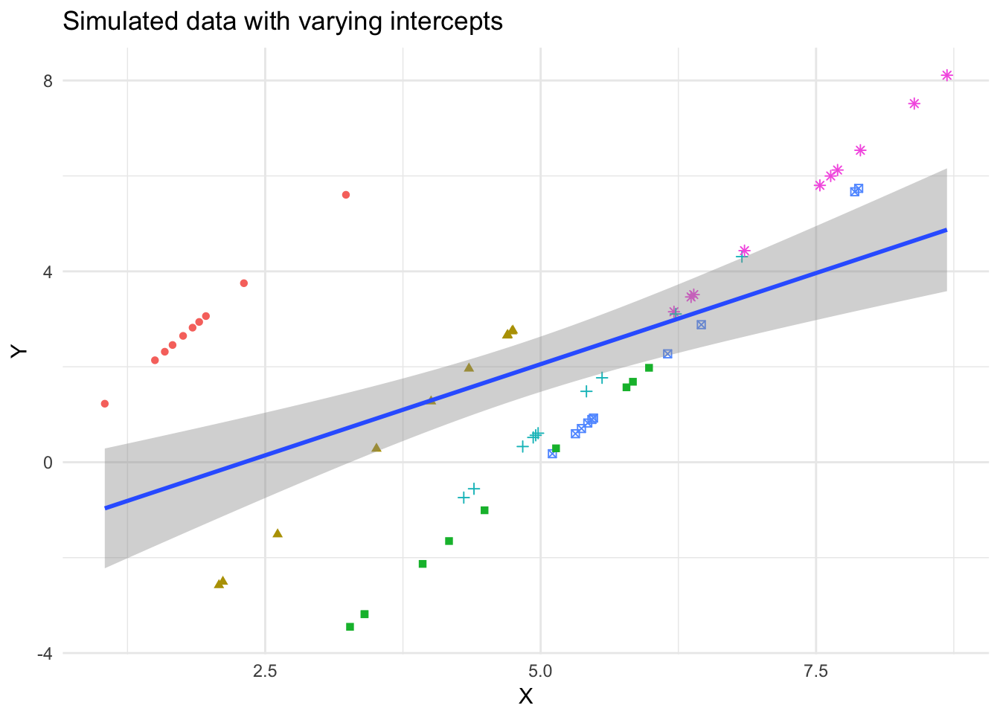
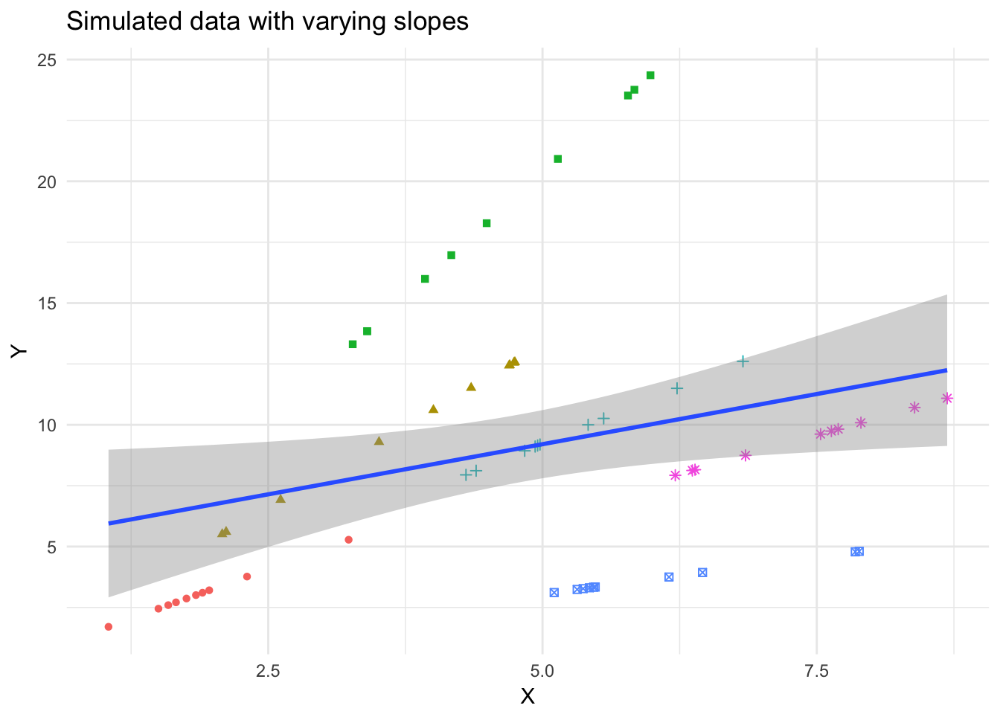
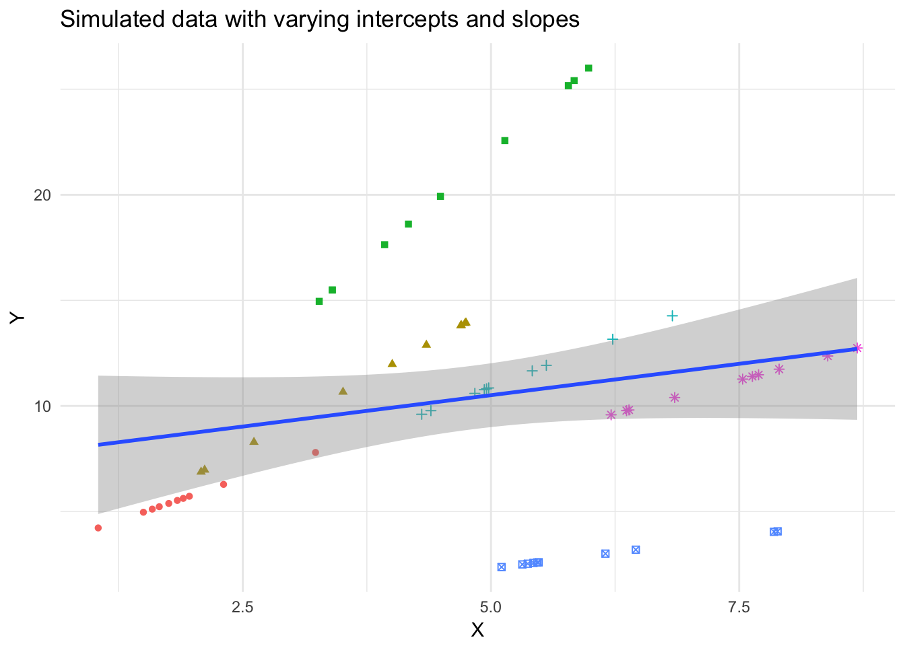
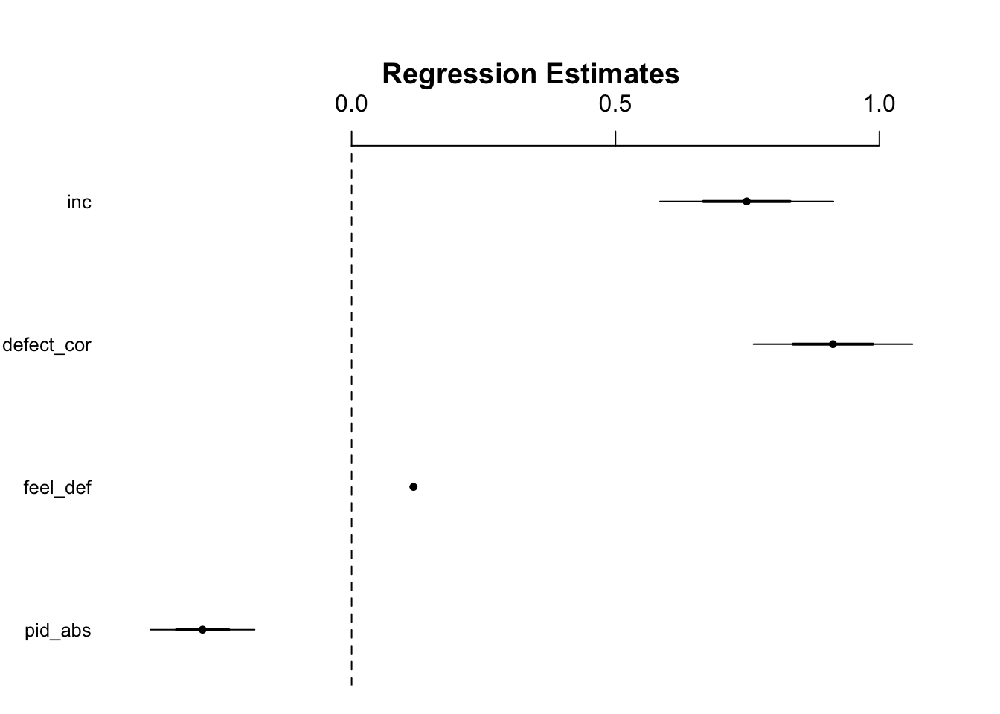
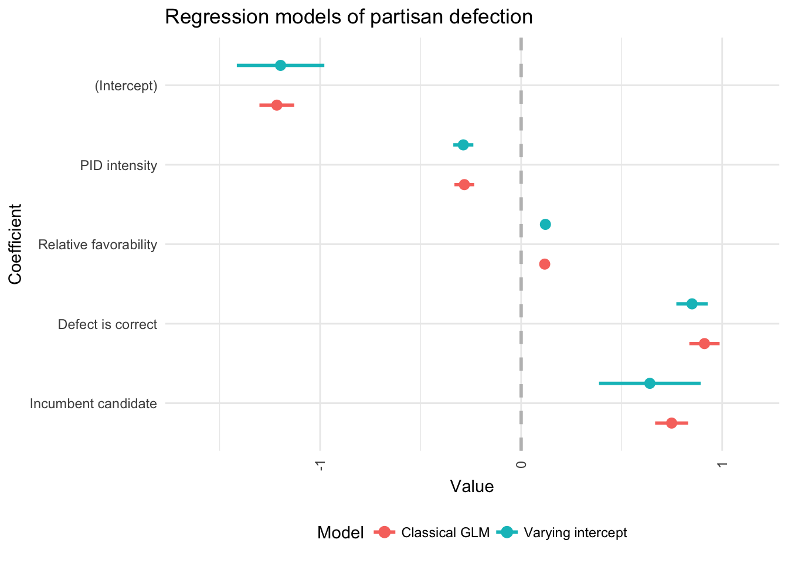
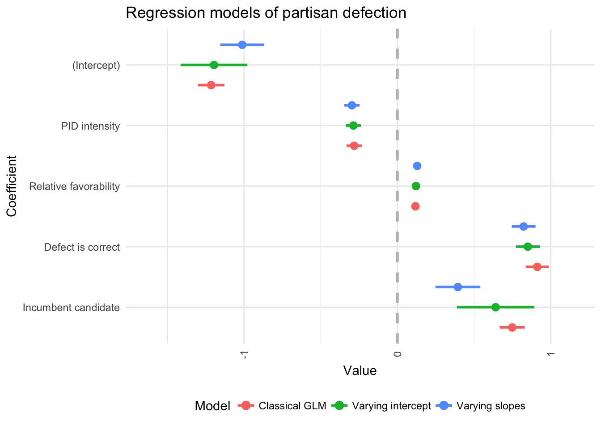

Multilevel data
MACS 30200 - Perspectives on Computational Research
Objectives
- Identify types of multilevel data structures
- Explain why classical GLM regression models don’t work with multilevel data
- Introduce random effects models
- Estimate a random effects model using the partisan defection dataset
- Identify limitations and drawbacks to MLM with traditional approximation methods
library(tidyverse)
library(broom)
library(forcats)
library(modelr)
library(stringr)
library(car)
library(rcfss)
library(coefplot)
library(RColorBrewer)
library(lme4)
options(digits = 3)
set.seed(1234)
theme_set(theme_minimal())What influences partisan defection in voters?
What motivates partisan individuals to cross party lines and vote for a presidential candidate from the opposition? In an era of heightened partisan polarization Democrats and Republicans are increasingly reluctant to cast ballots for their partisan opponents, making these individuals even stronger of outliers. While only a relatively small number of self-identified partisan individuals cast a defecting vote in the United States, the outcome of closely contested elections may be decided by these actions. Understanding individual motivations to cast aside partisanship improves our understanding of how deeply PID influences individual political behavior.
Based upon previous studies of partisan defection, I formed several hypotheses for how these factors influence vote selection in partisan individuals:
- Partisan intensity - individuals who more strongly identify with a political party have a lower probability of defecting. If partisan identification is related to vote choice and individuals can possess different intensities of PID, stronger partisans should have more attachment to their party’s candidate and be less likely to defect compared to weak or leaning partisans. This effect should be present for individuals affiliated with either major party and can apply in any election. Since partisanship is strongly associated with vote choice and is theorized to be a core psychological predisposition, PID intensity could moderate the effects of other causes of partisan defection.
- Relative favorability - as the perceived favorability of an opposing party’s candidate increases relative to the own party’s candidate, the probability of a voter’s partisan defection increases. Under certain circumstances short-term influences have been shown to significantly impact an individual’s vote choice. Intangible traits such as likability or relative warmth might conceivably influence individual vote decisions. Cited as the “with whom would you like to have a beer?” test, political commentators and scholars have explored this relationship with mixed results. If the opposing party’s candidate seems more appealing, regardless of policy views, individuals may be persuaded to defect for the more charismatic candidate. This might potentially explain specific episodes of defection such as the Reagan Democrats in 1984 and Republicans for Obama in 2008 where one candidate was perceived as more charismatic than the other.
- Correct is defect - if an individual’s correct vote decision requires him to defect, then the probability of defection increases. Correct voting decision factors include policy preferences, evaluation’s of candidates’ traits, and social group identification. As such, correct voting should be, and in fact is, closely associated with actual voting decisions. If an individual’s correct vote decision requires the voter to defect, that individual should have a higher probability of actually defecting relative to voters whose correct vote decisions match their partisan preference. This influence should be relevant to all voters in any election.
- Incumbency - when the incumbent is a candidate for election, voters who identify with the opposition party have a higher probability of defecting. When an election occurs and the incumbent does not participate, incumbency advantage will have no effect (the candidate from the incumbent’s party is not expected to receive any advantage). When the incumbent does participate, the probability of defection should only increase for voters who identify with the opposition’s party. Incumbents are unlikely to consistently cause voters from their own party to defect, so under this hypothesis the probability of defection differs across parties. There should be no effect on voters affiliated with the incumbent’s party (e.g. Republicans and Reagan in 1984), but the effect should be positive for opposition party members (Democrats in ’84).
Traditional GLM: issues related to pooling
Pooling is nothing more than combining data, either across units or time. In this instance, I am pooling American National Election Studies (ANES) observations over time. The key to pooling is exchangability: the notion that, conditional on the values of the covariates, any two observations within the data are considered to be the same (exchangable).
Why Pool?
Several reasons:
- Pooling adds data - this is the number one reason for pooling data. If the assumption of poolability holds, we can get “better” (read: more precise) estimates of our \(\hat{\beta}\)s.
- Generalizability - again, if a case can be made for model-conditional poolability, adding different cases means we can be more sure that our data generalized to broader sets of cases and/or longer time periods.
- Readability - if I estimate separate models for each election year, I have to report results for 10 different models.
In this study, I want to understand how partisan defection has occurred over time, not in a single election. Instead of having 752 observations from 2004, I can utilize over 10,000 data points from 10 different elections. I’d rather estimate and report a single model than have to report results from 10 different models. Pooling the data will also produce more generalizable results and only require interpretation of a single model.
Issues with pooling
Implicit in this analysis, then, is the idea that the coefficients \(\beta\) do not vary over subsets of the data defined along \(\mathbf{E} \in \{1972 ,\dotsc, 2008 \}\). In (say) the general, restrictive model:
\[ \begin{align} Pr(Y_{ei} = 1) &= \text{logit}^{-1}[\alpha + \beta_{1}\text{PID Intensity}_{ei} + \beta_{2}{\text{Relative Favorability}_{ei}} \nonumber \\ &\: + \beta_{3}\text{Defect is Correct}_{ei} + \beta_{4}\text{Incumbent Candidate}_{ei}] \nonumber \\ \text{logit}^{-1}[x] &= \frac{e^x}{1+e^x} \end{align} \]
the implicit assumption is one of exchangability – i.e., that all of the data come from the same regime, that is,
- that the process governing the relationship between \(X\) and \(Y\) is exactly the same for each \(e\),
- that the process governing the relationship between \(X\) and \(Y\) is the same for all \(i\),
- that the process governing the \(u\)s is the same \(\forall \: e\) and \(i\) as well.
If any of these assumptions are not true, the pooled estimator \(\hat{\beta}_P\) will be biased towards the regime with:
- the larger \(N\),
- the larger values of the coefficients, and/or
- the smaller standard errors of \(\hat{\beta}\)
The error term
Note as well that, throughout all this discussion, we’ve been assuming that the error term \(u_{it}\) is homoscedastic and uncorrelated, both within and across \(i\) and \(t\). Formally, that means we need to have:
\[u_{ij} \sim i.i.d.N(0, \sigma^2), \: \forall\: i,j\]
This is exactly what we’ve done in the previous model specifications with \(\sigma^2_y\). If you stop and think about it, that’s a pretty tall order. In particular, it requires that:
\[ \begin{align} Var(u_{ab}) &= Var(u_{cb}) \: \forall \: a \neq b \text{ (i.e., no cross-unit heteroscedasticity)}, \\ Var(u_{ab}) &= Var(u_{ac}) \: \forall \: b \neq c \text{ (i.e., no temporal heteroscedasticity)}, \\ Cov(u_{ab},u_{cd}) &= 0 \: \forall \: a \neq c,\: \forall \: b \neq d \text{ (i.e., no auto- or spatial correlation)} \end{align} \]
Remember: Residuals are (among other things) just an indicator of how good a job the model does of explaining \(Y\) with \(\mathbf{X}\). In that light, these assumptions are violated if (for example):
- Cross-unit differences mean that the model does a better job of explaining some units than others,
- Time effects (such as socialization, institutionalization, learning, or other such dynamics) cause the model to do a better or worse job of explaining \(Y\) over time,
- Omitted variables lead to residual correlation, either across units or (more commonly) over time.
While in a linear model, at least, problems with the error term don’t bias coefficient estimates, they can screw up one’s inferences pretty badly. And in nonlinear models (i.e. logits and all other GLMs) they can also lead to biases in the point estimates as well.
Additionally, pooling can lead to biased standard errors. This is due to the assumption of GLMs that the errors for each observation are independent of one another. Formally, \(E(u_i*u_j)=0 \: \forall \: i,j \: \text{combinations}\). If this assumption is violated and errors in some observations are related to the errors in other observations (likely within election year), the model appears to have more power than it otherwise should. This will create artificially deflated standard errors and make point estimates appear more precise.
Simulation of bad pooling
\[ \begin{align} y_{i} &\sim N(\alpha_{j[i]} + \beta x_{i},\sigma^2_y), &\text{for } i=1,\dotsc,n \nonumber \\ \alpha_j &\sim N(\mu_{\alpha},\sigma^2_{\alpha}), &\text{for } j=1,\dotsc,J \end{align} \]
obs <- 60
group.obs <- 6
groups <- rep(1:group.obs, times = obs / group.obs)
#varying intercept
beta <- 2
alpha <- rnorm(group.obs,2,2)
vary_int <- data_frame(x = runif(obs,0,3),
y = alpha + beta * x,
groups = factor(groups))
p <- ggplot(vary_int, aes(x, y)) +
geom_point(aes(color = groups, shape = groups)) +
labs(title = "Simulated data with varying intercepts",
x = expression(X),
y = expression(Y)) +
theme(legend.position = "none")
p
p +
geom_smooth(method = "lm") +
labs(subtitle = "OLS")
Partisan defection and pooling issues
Am I likely to violate any of these assumptions using this pooled dataset? Yes. The mean probability of partisan defection differs significantly across elections.
library(haven)
# read in data
anes <- read_dta("data/anes_pres.dta")
# generate variables
anes <- anes %>%
#generate binary party measures
mutate(rep = ifelse(pid < 4, 0,
ifelse(pid > 4, 1, NA))) %>%
#generate measure of defection and whether or not respondent actually voted correctly
mutate(defect = NA,
defect = replace(defect, which((pres_vote_r == 0) &
rep == 0), 0),
defect = replace(defect, which((pres_vote_r == 1) &
rep == 1), 0),
defect = replace(defect, which((pres_vote_r == 1 | pres_vote_r == 6) &
rep == 0), 1),
defect = replace(defect, which((pres_vote_r == 0 | pres_vote_r == 6) &
rep == 1), 1),
vote_cor_actual = ifelse(pres_vote_r == vote_cor, 1, 0)) %>%
# does the correct vote require one to defect?
mutate(defect_cor = ifelse(vote_cor != rep, 1, 0)) %>%
# generate index of PID intensity
mutate(pid_abs = abs(pid - 4) - 1) %>%
# remove 1948
filter(year != 1948) %>%
# does feeling thermometer towards candidates explain defection?
mutate(feel_def = ifelse(rep == 1, (dem_feel - rep_feel) / 2,
ifelse(rep == 0, (rep_feel - dem_feel) / 2, NA))) %>%
#does incumbency influence partisan defection?
mutate(inc = ifelse(year %in% c(1956, 1964, 1972, 1976,
1980, 1984, 1992, 1996, 2004), 1, 0),
inc_opp = ifelse((rep == 1 & year %in% c(1964, 1980, 1996)) |
(rep == 0 & year %in% c(1956, 1972, 1976,
1984, 1992, 2004)), 1, 0))#generate a plot of the percentage of partisan defectors in each election
##get weighted proportions for all, dems only, and reps only
anes %>%
group_by(year) %>%
summarize(defect = weighted.mean(defect, std_wt, na.rm = TRUE)) %>%
ggplot(aes(year, defect)) +
geom_col() +
scale_y_continuous(labels = scales::percent) +
labs(title = "Percentage of partisan defectors",
x = "Presidential election year",
y = "Percentage of partisan defectors")
Unless the composition of the electorate is changing significantly from year-to-year in a specific way, this assumption will not hold. Regardless, this assumption should be tested and explored, which is not possible under a standard GLM approach.
Multilevel data structures
Consider the classical linear model:
\[y_{i} \sim N(\alpha + \beta x_{i}, \sigma^2_{y}), \: \text{for}\: i=1,\dotsc,n\]
Implicitly, this model assumes (along with classical OLS assumptions):
- That the constant term is constant across different \(i\)s, and
- That the effect of any given variable \(X\) on \(Y\) is constant across observations1
We can write a similar model in the panel context as follows:
\[y_{ij} \sim N(\alpha + \beta x_{ij}, \sigma^2_{y}), \: \text{for}\: i=1,\dotsc,n; j = 1, \dotsc,k\]
Note that this model assumes the same things as the earlier ones, especially about the effects of constants and covariates.
In any regression context, the two assumptions mentioned are critical; violating them leads to a form of specification bias. In the panel context, these two assumptions are often going to be problematic. This is because, since we’re observing multiple units over time or across groups, there’s often (in fact, usually) some reason to believe that there may be differences in either \(\alpha\) or \(\beta\) over either \(i\) or \(j\). How could we correct for these possibilities?
Variable intercepts
One possible violation of the above assumptions is that the intercepts vary. The most common way this occurs is for different units to have varying intercepts:
\[y_{ij} \sim N(\alpha_i + \beta x_{ij}, \sigma^2_{y}), \: for\: i=1,\dotsc,n\]
The slopes for each unit are the same, but the intercepts are different. It’s also possible that the intercepts vary over time, rather than over units:
\[y_{ij} \sim N(\alpha_t + \beta x_{ij}, \sigma^2_{y}), \: for\: i=1,\dotsc,n\]
If we have data that corresponds to the first formula, but estimate a model like the second formula, we can get biased coefficients.
Variable slopes
The other obvious possibility is that we have a constant intercept, but the effects of \(X\) on \(Y\) differs across either units or (less likely) time:
\[y_{it} \sim N(\alpha + \beta_{i} x_{ij}, \sigma^2_{y}), \: for\: i=1,\dotsc,n\]
We could also have variation in \(\beta\) over time, or even over both units and time.
A model like above assumes that the regression lines all pass through the same point on the \(Y\)-axis, but that their slopes differ. The idea of a common intercept, however, is a bit strange (at least to social scientists). Instead what is more likely…
Variable slopes and intercepts
This is when things really start to get difficult. We might, for example, have variable slopes and intercepts for each unit \(i\):
\[y_{ij} \sim N(\alpha_{i} + \beta_{i} x_{ij}, \sigma^2_{y}), \: for\: i=1,\dotsc,n\]
Moreover, we could instead have different \(\alpha\)s and \(\beta\)s for every time point, rather than for every unit:
\[y_{ij} \sim N(\alpha_{t} + \beta_{j} x_{ij}, \sigma^2_{y}), \: for\: i=1,\dotsc,n\]
or for both different units and time points:
\[y_{ij} \sim N(\alpha_{it} + \beta_{it} x_{ij}, \sigma^2_{y}), \: for\: i=1,\dotsc,n\]
Using the incorrect model specification for the data can lead to odd, even nonsensical, results: underestimating some slopes, overestimating others, and in some cases even getting the sign wrong.
All of this leads to…
Multilevel modeling
What many social scientists refer to as random effects, Gelman and Hill simply call multilevel modeling. Fixed effects are usually defined as varying coefficients that are not themselves modeled. For example, a classical regression including \(J-1\) unit indicators as regression predictors is sometimes called a fixed-effects model. As we will see, fixed effects are a subtype of random effects; I (and others) recommend always using random effects and focusing on the description of the model itself (for example, varying intercepts and constant slopes), with the understanding that batches of coefficients (for example, \(\alpha_1,\dotsc,\alpha_J\)) will themselves be modeled.
Fixed effects
Fixed effects has several potential meanings in a regression model. Most commonly, fixed effects are when an input variable with \(J\) categories is incorporated into a regression model as \(J-1\) dummy (dichotomous) variables, with one category held out to serve as the baseline. In essence, this adds a coefficient for each category. The goal of this is to parse out all between-category effects on \(Y\), allowing the remaining variables to explain only within-category effects.
This approach is fine (assuming \(J\) is small relative to \(n\)) as long as you have no category-level predictors or explanatory variables in the model. So in our partisan defection model, this is fine if we include fixed effects for election year and test partisan intensity, relative favorability, and correct is defect hypotheses:
basic.fix <- glm(defect ~ pid_abs + feel_def + defect_cor + factor(year),
data = anes, family = binomial(link = "logit"))
tidy(basic.fix)## term estimate std.error statistic p.value
## 1 (Intercept) -0.636 0.14228 -4.467 7.94e-06
## 2 pid_abs -0.289 0.04995 -5.795 6.82e-09
## 3 feel_def 0.121 0.00324 37.324 6.61e-305
## 4 defect_cor 0.841 0.07826 10.752 5.77e-27
## 5 factor(year)1976 -0.343 0.18432 -1.863 6.24e-02
## 6 factor(year)1980 0.328 0.16738 1.961 4.99e-02
## 7 factor(year)1984 -0.164 0.16889 -0.974 3.30e-01
## 8 factor(year)1988 -0.275 0.17268 -1.592 1.11e-01
## 9 factor(year)1992 0.864 0.15178 5.692 1.26e-08
## 10 factor(year)1996 0.213 0.17052 1.249 2.12e-01
## 11 factor(year)2000 -0.708 0.18465 -3.836 1.25e-04
## 12 factor(year)2004 -0.403 0.21648 -1.863 6.25e-02
## 13 factor(year)2008 -0.683 0.17907 -3.815 1.36e-04coefplot(basic.fix,
title = "Fixed effects GLM of partisan defection",
newNames = c("pid_abs" = "PID intensity",
"feel_def" = "Relative favorability",
"defect_cor" = "Defect is correct",
"inc" = "Incumbent candidate",
"factor(year)1976" = "1976",
"factor(year)1980" = "1980",
"factor(year)1984" = "1984",
"factor(year)1988" = "1988",
"factor(year)1992" = "1992",
"factor(year)1996" = "1996",
"factor(year)2000" = "2000",
"factor(year)2004" = "2004",
"factor(year)2008" = "2008"),
decreasing = TRUE)
We estimate coefficients for the three explanatory variables, as well as dummy coefficients for each election in the model.2 Each dummy coefficient represents the comparison to the baseline category, 1972. For example, the odds of partisan defection in the 2000 election was 0.492 of the odds of defection in 1972.
One major problem with this approach is that is assumes all the variation in the outcome of interest is systematically explainable only by individual-level variables. That is, we cannot add group-level predictors to the model:
summary(glm(defect ~ pid_abs + feel_def + defect_cor + inc + factor(year),
data = anes, family = binomial(link = "logit")))##
## Call:
## glm(formula = defect ~ pid_abs + feel_def + defect_cor + inc +
## factor(year), family = binomial(link = "logit"), data = anes)
##
## Deviance Residuals:
## Min 1Q Median 3Q Max
## -3.089 -0.403 -0.188 -0.065 3.527
##
## Coefficients: (1 not defined because of singularities)
## Estimate Std. Error z value Pr(>|z|)
## (Intercept) -1.31876 0.13258 -9.95 < 2e-16 ***
## pid_abs -0.28948 0.04995 -5.80 6.8e-09 ***
## feel_def 0.12097 0.00324 37.32 < 2e-16 ***
## defect_cor 0.84148 0.07826 10.75 < 2e-16 ***
## inc 0.68320 0.17907 3.82 0.00014 ***
## factor(year)1976 -0.34340 0.18432 -1.86 0.06244 .
## factor(year)1980 0.32818 0.16738 1.96 0.04992 *
## factor(year)1984 -0.16445 0.16889 -0.97 0.33020
## factor(year)1988 0.40838 0.16883 2.42 0.01557 *
## factor(year)1992 0.86387 0.15178 5.69 1.3e-08 ***
## factor(year)1996 0.21304 0.17052 1.25 0.21153
## factor(year)2000 -0.02518 0.18129 -0.14 0.88953
## factor(year)2004 -0.40321 0.21648 -1.86 0.06252 .
## factor(year)2008 NA NA NA NA
## ---
## Signif. codes: 0 '***' 0.001 '**' 0.01 '*' 0.05 '.' 0.1 ' ' 1
##
## (Dispersion parameter for binomial family taken to be 1)
##
## Null deviance: 9118.6 on 10380 degrees of freedom
## Residual deviance: 5164.6 on 10368 degrees of freedom
## (7842 observations deleted due to missingness)
## AIC: 5191
##
## Number of Fisher Scoring iterations: 6The problem is one of perfect collinearity:
ggplot(anes, aes(year, inc)) +
geom_point() +
labs(title = "Perfect prediction",
x = "Election year",
y = "Incumbent in election")
# correlation coefficient, by year
anes %>%
group_by(year) %>%
summarize(cor = cor(year, inc))## # A tibble: 15 x 2
## year cor
## <dbl> <lgl>
## 1 1952 NA
## 2 1956 NA
## 3 1960 NA
## 4 1964 NA
## 5 1968 NA
## 6 1972 NA
## 7 1976 NA
## 8 1980 NA
## 9 1984 NA
## 10 1988 NA
## 11 1992 NA
## 12 1996 NA
## 13 2000 NA
## 14 2004 NA
## 15 2008 NABecause incumbency doesn’t vary at the election-level, it is completely constant within elections. You cannot even estimate a correlation coefficient because inc is a constant! Therefore R has to drop one of the dummy variables just to estimate the model.
Random effects
Multilevel regression can be thought of as a method for compromising between the two extremes of excluding a categorical predictor from a model (complete pooling), or estimating separate models within each level of the categorical predictor (no pooling). The former ignores within-unit variation, while the latter ignores between-unit variation. Additionally, the no pooling approach prevents the researcher from conducting inference using categorical predictors.
Instead, multilevel modeling uses a compromise between these two approaches. A soft constraint is applied to the coefficients: they are assigned a probability distribution.
Varying intercepts
A varying intercept model could take the following form:
\[ \begin{align} y_i &\sim N(\alpha_{j[i]} + \beta x_{i}, \sigma^2_{y}), \: \text{for} \: i=1,\dotsc,n, \nonumber \\ \alpha_{j} &\sim N(\mu_{\alpha},\sigma^2_{\alpha}), \: \text{for} \: j=1,\dotsc,J, \end{align} \]
\(\alpha_{j}\) is now assumed to be distributed normally with a mean \(\mu_{\alpha}\) and variance \(\sigma^2_{\alpha}\) estimated from the data. This pools the estimates of \(\alpha_{j}\) toward the mean level \(\mu_{\alpha}\), but not all the way; thus, group-level estimates are the result of a partial-pooling compromise. In the limit of \(\sigma_{\alpha} \to \infty\), the soft constraints do nothing, and there is no pooling; as \(\sigma_{\alpha} \to 0\), they pull the estimates all the way to zero, yielding the complete-pooling estimate. This demonstrates that even if there is no dependence in the errors between groups, multilevel regression will still produce accurate point estimates and standard errors. Instead of making an assumption about independence, we can directly model it and let the data tell us if any exists.
This approach also reduces the number of parameters needing to be estimated. For example, a fixed effects approach with 20 groups would require estimating \(J-1\) parameters (19). Introducing a soft-constraint and modeling \(\alpha\) as a random draw from a single distribution, all we need to estimate is the parameters for this distribution. Typically we assume that the distribution is normal, so we only need to estimate two parameters (the mean \(\mu\) and the variance \(\sigma^2\)). This increases our degrees of freedom (which could be an issue if we have lots of groups in the dataset). As seen below, this also allows us to introduce group-level predictors into the model.
#draw x and c from random normal distribution, adjusting for group differences
x <- runif(obs, 0, 3) + groups
c <- rep(rnorm(group.obs, 2, 1), times = obs / group.obs) * groups
beta <- 2 #set beta
y <- beta*(x) - c #+ rnorm(obs,0,1) #generate y from x, c, beta, and random noise
sim_data_mlm <- data_frame(x, y, groups)
# plot data
ggplot(sim_data_mlm, aes(x, y)) +
geom_point(aes(color = factor(groups), shape = factor(groups))) +
geom_smooth(aes(color = factor(groups)), method = "lm", se = FALSE,
fullrange = TRUE, size = .5) +
geom_smooth(method = "lm") +
labs(title = "Simulated data with varying intercepts",
x = expression(X),
y = expression(Y)) +
theme(legend.position = "none")
Adding group-level predictors
Perhaps we believe certain group-level variables systematically influence the baseline level of \(y_{ij}\). Using this flexible framework, we can simply include them directly in the model as predictors of \(\alpha_{J}\):
\[ \begin{align} y_i &\sim N(\alpha_{j[i]} + \beta x_{i}, \sigma^2_{y}), \: \text{for} \: i=1,\dotsc,n, \nonumber \\ \alpha_{j} &\sim N(\gamma_{0} + \gamma_{1}u_{j},\sigma^2_{\alpha}), \: \text{for} \: j=1,\dotsc,J, \end{align} \]
where \(x_{i}\) is a unit-specific indicator and \(u_{j}\) is a group-level measure. Since we are leveraging multiple observations within each group, we can now include group-level measures without worrying about overspecifying the model or inducing perfect collinearity. The \(\gamma\)s can be interpreted in the same manner as the \(\beta\)s as they all are measured on the same dimension.
- For linear regression: a one-unit increase on \(u_{j}\) is associated with a \(\gamma\) increase in \(y_{ij}\)
- For logistic regression: a one-unit increase on \(u_{j}\) is associated with a \(\gamma\) increase in the log-odds of the \(Pr(y_{ij}=1)\)).
Varying slopes
Now what if we believe the effects of \(\beta\) vary by group? We can treat this the same as we did with the varying intercept; thus,
\[ \begin{align} y_i &\sim N(\alpha_{j[i]} + \beta_{j[i]} x_{i}, \sigma^2_{y}), \: \text{for} \: i=1,\dotsc,n, \nonumber \\ \begin{pmatrix} \alpha_{j} \\ \beta_{j} \\ \end{pmatrix} &\sim N\left(\begin{pmatrix} \mu_{\alpha} \\ \mu_{\beta} \\ \end{pmatrix},\begin{pmatrix} \sigma^2_{\alpha} & \rho \sigma_{\alpha} \sigma_{\beta} \\ \rho \sigma_{\alpha} \sigma_{\beta} & \sigma^{2}_{\beta} & \\ \end{pmatrix}\right), \: \text{for} \: j=1,\dotsc,J, \end{align} \]
with variation in the \(\alpha_{j}\)’s and the \(\beta_{j}\)’s and also a between-group correlation parameter.
# constant intercept
alpha <- 0
beta <- rnorm(group.obs, 2, 1)
y <- alpha + beta * x
sim_data_mlm <- data_frame(x, y, groups)
# plot data
ggplot(sim_data_mlm, aes(x, y)) +
geom_point(aes(color = factor(groups), shape = factor(groups))) +
geom_smooth(aes(color = factor(groups)), method = "lm", se = FALSE,
fullrange = TRUE, size = .5) +
geom_smooth(method = "lm") +
labs(title = "Simulated data with varying slopes",
x = expression(X),
y = expression(Y)) +
theme(legend.position = "none")
# varying intercept
alpha <- rnorm(group.obs,2,2)
y <- alpha + beta * x
sim_data_mlm <- data_frame(x, y, groups)
# plot data
ggplot(sim_data_mlm, aes(x, y)) +
geom_point(aes(color = factor(groups), shape = factor(groups))) +
geom_smooth(aes(color = factor(groups)), method = "lm", se = FALSE,
fullrange = TRUE, size = .5) +
geom_smooth(method = "lm") +
labs(title = "Simulated data with varying intercepts and slopes",
x = expression(X),
y = expression(Y)) +
theme(legend.position = "none")
We can also include group-level predictors:
\[ \begin{align} y_i &\sim N(\alpha_{j[i]} + \beta_{j[i]} x_{i}, \sigma^2_{y}), \: \text{for} \: i=1,\dotsc,n, \nonumber \\ \begin{pmatrix} \alpha_{j} \\ \beta_{j} \\ \end{pmatrix} &\sim N\left(\begin{pmatrix} \gamma^{\alpha}_{0} + \gamma^{\alpha}_{1} u_{j} \\ \gamma^{\beta}_{0} + \gamma^{\beta}_{1} u_{j} \\ \end{pmatrix},\begin{pmatrix} \sigma^2_{\alpha} & \rho \sigma_{\alpha} \sigma_{\beta} \\ \rho \sigma_{\alpha} \sigma_{\beta} & \sigma^{2}_{\beta} & \\ \end{pmatrix}\right), \: \text{for} \: j=1,\dotsc,J, \end{align} \]
In this formulation, we believe the same group-level variable explains both the intercept and the observation-specific covariate. This does not have to be true; we can include any combination of group-specific covariates in the separate models for unit-specific effects. Note that we should not use unit-specific variables in the models for \(\alpha\) and \(\beta\). If we believe such a relationship exists, we should specify it as an interaction in the model specific to \(y_{ij}\).
Other specifications of MLM
Multilevel modeling is an extremely flexible framework which allows researchers to introduce all sorts of interesting specifications of models. Different types of data structures and specifications include:
- Three or more levels of data
- Repeated measures (i.e. panel data)
- Time-series cross sections
- Non-nested structures
- Varying slopes without varying intercepts
- Cross-level interactions
- Discrete and non-normally distributed outcomes (e.g. dichotomous outcomes, binomial trials, count data, ordinal and multinomial outcomes)
- Bayesian estimation procedures
- Measuring sample size and power calculations
- Multilevel regression, imputation, and post-stratification (MRP)
Implementing MLM for partisan defection
Let the classical model be specified as
\[ \begin{align} Pr(Y_{ei} = 1) &= \text{logit}^{-1}[\alpha + \beta_{1}\text{PID Intensity}_{ei} + \beta_{2}{\text{Relative Favorability}_{ei}} \nonumber \\ &\: + \beta_{3}\text{Defect is Correct}_{ei} + \beta_{4}\text{Incumbent Candidate}_{e}] \nonumber \\ \text{logit}^{-1}[x] &= \frac{e^x}{1+e^x} \end{align} \]
where \(Y_{ei}\) is a dichotomous variable coded one if the respondent reports voting for a presidential candidate from a different party other than his/her own, \(\alpha\) is a constant, \(\beta\)s represent the log-odds association of the covariates with the probability of defection, and observations are pooled over elections (\(e \in \{1976, 1980, 1984, 1988, 1992, 1996, 2000, 2004, 2008\}\)). This is different from a traditional time series-cross sectional design in that respondents \(i\) are not repeatedly interviewed: each election consists of a different representative sample of U.S. citizens. Therefore, the primary focus of the multilevel model should be on independence between elections. Will the baseline probability of defection differ across elections? Will the effects of partisan intensity or the other unit-specific measures differ across elections?
Classical logistic regression
Let’s first examine the results of a classical logit model, without controlling for dependence within elections:
basic <- glm(defect ~ pid_abs + feel_def + defect_cor + inc,
data = anes, family = binomial(link = "logit"))
tidy(basic)## term estimate std.error statistic p.value
## 1 (Intercept) -1.215 0.08654 -14.04 8.63e-45
## 2 pid_abs -0.282 0.04936 -5.72 1.05e-08
## 3 feel_def 0.117 0.00313 37.45 6.16e-307
## 4 defect_cor 0.912 0.07530 12.11 9.30e-34
## 5 inc 0.749 0.08214 9.11 7.98e-20coefplot(basic,
title = "Classical GLM of partisan defection",
newNames = c("pid_abs" = "PID intensity",
"feel_def" = "Relative favorability",
"defect_cor" = "Defect is correct",
"inc" = "Incumbent candidate"),
decreasing = TRUE)
These results indicate when the covariates equal zero, individuals are more likely to vote for a candidate from their own party rather than defect (\(\alpha=-0.83\)). PID intensity is also negatively associated with partisan defection (consistent with the hypothesized direction), while relative favorability, defect is correct, and incumbent candidate are all positive. Importantly, the standard errors for each coefficient are low with \(\textit{p-value} < 0.01\). A classical logistic regression model suggests our coefficient estimates are very precise, and effects do not vary across election years (because we did not allow them to vary).
Varying intercept
What if we relax the assumption that the baseline probability of defection is constant for all observations? Let us model \(\alpha\) directly from the data, specifying the model as:
\[ \begin{align} Pr(Y_{ei} = 1) &= \text{logit}^{-1}[\alpha_{e[i]} + \beta_{1}\text{PID Intensity}_{ei} \nonumber \\ &\quad + \beta_{2}{\text{Relative Favorability}_{ei}} + \beta_{3}\text{Defect is Correct}_{ei}] \nonumber \\ \alpha_{e} &\sim N(\gamma_{0}^{\alpha} + \gamma_{1}^{\alpha}\text{Incumbent},\sigma^2_{\alpha}), \: \text{for} \: e=1976,\dotsc,2008, \nonumber \\ \text{logit}^{-1}[x] &= \frac{e^x}{1+e^x} \end{align} \]
We can use the glmer() function in lme4 library to estimate generalized linear multilevel models:
vary.int <- glmer(defect ~ pid_abs + feel_def + defect_cor + inc + (1|year),
data = anes,
family = binomial(link = "logit"))
tidy(vary.int)## term estimate std.error statistic p.value group
## 1 (Intercept) -1.197 0.21768 -5.50 3.86e-08 fixed
## 2 pid_abs -0.288 0.04988 -5.77 8.04e-09 fixed
## 3 feel_def 0.121 0.00323 37.33 5.60e-305 fixed
## 4 defect_cor 0.850 0.07804 10.89 1.27e-27 fixed
## 5 inc 0.640 0.25284 2.53 1.13e-02 fixed
## 6 sd_(Intercept).year 0.345 NA NA NA yearsummary(vary.int)## Generalized linear mixed model fit by maximum likelihood (Laplace
## Approximation) [glmerMod]
## Family: binomial ( logit )
## Formula: defect ~ pid_abs + feel_def + defect_cor + inc + (1 | year)
## Data: anes
##
## AIC BIC logLik deviance df.resid
## 5209 5253 -2598 5197 10375
##
## Scaled residuals:
## Min 1Q Median 3Q Max
## -11.315 -0.295 -0.135 -0.046 22.703
##
## Random effects:
## Groups Name Variance Std.Dev.
## year (Intercept) 0.119 0.345
## Number of obs: 10381, groups: year, 10
##
## Fixed effects:
## Estimate Std. Error z value Pr(>|z|)
## (Intercept) -1.19665 0.21768 -5.5 3.9e-08 ***
## pid_abs -0.28768 0.04988 -5.8 8.0e-09 ***
## feel_def 0.12072 0.00323 37.3 < 2e-16 ***
## defect_cor 0.85002 0.07804 10.9 < 2e-16 ***
## inc 0.64021 0.25284 2.5 0.011 *
## ---
## Signif. codes: 0 '***' 0.001 '**' 0.01 '*' 0.05 '.' 0.1 ' ' 1
##
## Correlation of Fixed Effects:
## (Intr) pid_bs fel_df dfct_c
## pid_abs -0.206
## feel_def 0.039 0.012
## defect_cor -0.143 0.178 -0.062
## inc -0.808 -0.011 0.025 -0.024multiplot(basic, vary.int,
title = "Regression models of partisan defection",
newNames = c("pid_abs" = "PID intensity",
"feel_def" = "Relative favorability",
"defect_cor" = "Defect is correct",
"inc" = "Incumbent candidate"),
names = c("Classical GLM", "Varying intercept"),
decreasing = TRUE) +
theme(legend.position = "bottom")
The top of the summary reports general model statistics such as log-likelihood, deviance, AIC, and BIC. These statistics can be used for model comparisons and relative goodness-of-fit tests. Below this is a table with the variance components. Since logistic regression assumes a constant unit-level variance of \(\frac{\pi^2}{3}\), there is no variance component for this level. The only variance component estimated in the model is \(\sigma^2_{\alpha}\). The standard deviation is 0.34, suggesting a significant amount of variance around the average intercept. This result confirms our expectation since we know the mean defection rate differs across elections.
The remaining estimated coefficients do not differ significantly from the original non-MLM results.
Multilevel modeling also allows us to retain group-specific estimates of varying coefficients. These estimates are combinations of the fixed and random effects.3 These group-specific effects can be generated using the coef() function:
coef(vary.int)## $year
## (Intercept) pid_abs feel_def defect_cor inc
## 1972 -1.271 -0.288 0.121 0.85 0.64
## 1976 -1.570 -0.288 0.121 0.85 0.64
## 1980 -0.976 -0.288 0.121 0.85 0.64
## 1984 -1.423 -0.288 0.121 0.85 0.64
## 1988 -0.943 -0.288 0.121 0.85 0.64
## 1992 -0.455 -0.288 0.121 0.85 0.64
## 1996 -1.080 -0.288 0.121 0.85 0.64
## 2000 -1.329 -0.288 0.121 0.85 0.64
## 2004 -1.587 -0.288 0.121 0.85 0.64
## 2008 -1.308 -0.288 0.121 0.85 0.64
##
## attr(,"class")
## [1] "coef.mer"In every year, respondents on average have a low baseline log-odds of defecting (holding all covariates equal to zero). As suggested by \(\sigma^2_{\alpha}\), the magnitude of this coefficient varies significantly, ranging from a low of \(-1.587\) to a high of \(-0.455\).
Varying slope(s) and intercept
Now let us consider potential varying slopes. While we could estimate the model with a varying slope for each coefficient, unless we have hundreds of thousands of observations we will quickly run into issues maximizing the log-likelihood (this will be covered shortly under the limitations section). First and foremost we should use theory to guide our selection of varying slopes. However if it seems plausible that any of the covariates should need a varying slope, we need a method to determine which coefficients should receive one in the final model.
One can use a likelihood ratio test to determine whether or not the additional variance component significantly improves overall model fit. Note that since GLM implementations of MLM utilize the Laplace approximation rather than full MLE, deviance or likelihood ratio tests can only be applied to models with identical constant parameters. That is, not only must the dataset be the same, the model specifications must be identical except for the variance component. The results of a test to determine if a varying slope should be utilized for PID intensity is:
defect <- glmer(defect ~ pid_abs + feel_def + defect_cor + inc + (1|year),
data = anes, family = binomial(link = "logit"))
defect.pid3.rc1 <- glmer(defect ~ pid_abs + feel_def + defect_cor + inc +
(1|year) + (pid_abs|year),
data = anes, family = binomial(link = "logit"))
defect.pid3.test <- anova(defect, defect.pid3.rc1)
tidy(defect.pid3.test)## term df AIC BIC logLik deviance statistic Chi.Df p.value
## 1 defect 6 5209 5253 -2599 5197 NA NA NA
## 2 defect.pid3.rc1 9 5214 5280 -2598 5196 0.626 3 0.89The ANOVA test reports the degrees of freedom, AIC, BIC, and log-likelihood for each model. The \(\chi^2\) test statistic is simply the difference in log-likelihoods, with the degrees of freedom for the test statistic derived from the difference in the overall models’ degrees of freedom. Notice that by specifying a varying slope for PID intensity, we’re actually adding three parameters to the model:
- \(\mu_{\beta_{1}}\)
- \(\sigma^2_{\beta_{1}}\)
- The correlation \(\rho\) between \(\sigma^2_{\alpha}\) and \(\sigma^2_{\beta_{1}}\)
The p-value for the test statistic is \(0.89\), far above the traditional threshold of \(0.05\). Adding a varying slope for PID intensity does not significantly improve overall model fit, so it is unnecessary in the final model.
defect <- glmer(defect ~ pid_abs + feel_def + defect_cor + inc + (1|year),
data = anes, family = binomial(link = "logit"))
defect.xfeel <- glmer(defect ~ pid_abs + feel_def + defect_cor + inc +
pid_abs * feel_def + (1|year),
data = anes, family = binomial(link = "logit"))
defect.xdef <- glmer(defect ~ pid_abs + feel_def + defect_cor + inc +
pid_abs * defect_cor + (1|year),
data = anes, family = binomial(link = "logit"))
defect.xinc <- glmer(defect ~ pid_abs + feel_def + defect_cor + inc +
pid_abs * inc_opp + (1|year),
data = anes, family = binomial(link = "logit"))
defect.cor.rc1 <- glmer(defect ~ pid_abs + feel_def + defect_cor +
inc + (1|year) + (defect_cor|year),
data = anes, family = binomial(link = "logit"))
defect.pid3.rc1 <- glmer(defect ~ pid_abs + feel_def + defect_cor +
inc + (1|year) + (pid_abs|year),
data = anes, family = binomial(link = "logit"))
defect.feel.rc1 <- glmer(defect ~ pid_abs + feel_def + defect_cor +
inc + (1|year) + (feel_def|year),
data = anes, family = binomial(link = "logit"))
defect.inc.rc1 <- glmer(defect ~ pid_abs + feel_def + defect_cor +
inc + (1|year) + (inc|year),
data = anes, family = binomial(link = "logit"))
# likelihood ratio tests to compare model fit
anova(defect, defect.xfeel)## Data: anes
## Models:
## defect: defect ~ pid_abs + feel_def + defect_cor + inc + (1 | year)
## defect.xfeel: defect ~ pid_abs + feel_def + defect_cor + inc + pid_abs * feel_def +
## defect.xfeel: (1 | year)
## Df AIC BIC logLik deviance Chisq Chi Df Pr(>Chisq)
## defect 6 5209 5253 -2599 5197
## defect.xfeel 7 5208 5259 -2597 5194 2.68 1 0.1anova(defect, defect.xdef)## Data: anes
## Models:
## defect: defect ~ pid_abs + feel_def + defect_cor + inc + (1 | year)
## defect.xdef: defect ~ pid_abs + feel_def + defect_cor + inc + pid_abs * defect_cor +
## defect.xdef: (1 | year)
## Df AIC BIC logLik deviance Chisq Chi Df Pr(>Chisq)
## defect 6 5209 5253 -2599 5197
## defect.xdef 7 5210 5260 -2598 5196 1.4 1 0.24anova(defect, defect.xinc)## Data: anes
## Models:
## defect: defect ~ pid_abs + feel_def + defect_cor + inc + (1 | year)
## defect.xinc: defect ~ pid_abs + feel_def + defect_cor + inc + pid_abs * inc_opp +
## defect.xinc: (1 | year)
## Df AIC BIC logLik deviance Chisq Chi Df Pr(>Chisq)
## defect 6 5209 5253 -2599 5197
## defect.xinc 8 5211 5269 -2597 5195 2.28 2 0.32anova(defect, defect.cor.rc1)## Data: anes
## Models:
## defect: defect ~ pid_abs + feel_def + defect_cor + inc + (1 | year)
## defect.cor.rc1: defect ~ pid_abs + feel_def + defect_cor + inc + (1 | year) +
## defect.cor.rc1: (defect_cor | year)
## Df AIC BIC logLik deviance Chisq Chi Df Pr(>Chisq)
## defect 6 5209 5253 -2599 5197
## defect.cor.rc1 9 5212 5277 -2597 5194 3.26 3 0.35anova(defect, defect.pid3.rc1)## Data: anes
## Models:
## defect: defect ~ pid_abs + feel_def + defect_cor + inc + (1 | year)
## defect.pid3.rc1: defect ~ pid_abs + feel_def + defect_cor + inc + (1 | year) +
## defect.pid3.rc1: (pid_abs | year)
## Df AIC BIC logLik deviance Chisq Chi Df Pr(>Chisq)
## defect 6 5209 5253 -2599 5197
## defect.pid3.rc1 9 5214 5280 -2598 5196 0.63 3 0.89anova(defect, defect.feel.rc1)## Data: anes
## Models:
## defect: defect ~ pid_abs + feel_def + defect_cor + inc + (1 | year)
## defect.feel.rc1: defect ~ pid_abs + feel_def + defect_cor + inc + (1 | year) +
## defect.feel.rc1: (feel_def | year)
## Df AIC BIC logLik deviance Chisq Chi Df Pr(>Chisq)
## defect 6 5209 5253 -2599 5197
## defect.feel.rc1 9 5166 5232 -2574 5148 48.6 3 1.6e-10 ***
## ---
## Signif. codes: 0 '***' 0.001 '**' 0.01 '*' 0.05 '.' 0.1 ' ' 1anova(defect, defect.inc.rc1)## Data: anes
## Models:
## defect: defect ~ pid_abs + feel_def + defect_cor + inc + (1 | year)
## defect.inc.rc1: defect ~ pid_abs + feel_def + defect_cor + inc + (1 | year) +
## defect.inc.rc1: (inc | year)
## Df AIC BIC logLik deviance Chisq Chi Df Pr(>Chisq)
## defect 6 5209 5253 -2599 5197
## defect.inc.rc1 9 5213 5279 -2598 5195 1.75 3 0.63Sequential tests of the other covariates indicate relative favorability should vary across elections, so the final model is specified as:
\[ \begin{align} Pr(Y_{ei} = 1) &= \text{logit}^{-1}[\alpha_{e[i]} + \beta_{1}\text{PID Intensity}_{ei} \nonumber \\ &\quad + \beta_{2e[i]}{\text{Relative Favorability}_{ei}} + \beta_{3}\text{Defect is Correct}_{ei}] \nonumber \\ \begin{pmatrix} \alpha_{e} \\ \beta_{2e} \\ \end{pmatrix} &\sim N\left(\begin{pmatrix} \gamma_{0}^{\alpha} + \gamma_{1}^{\alpha}\text{Incumbent} \\ \gamma_{0}^{\beta_{2}} \\ \end{pmatrix},\begin{pmatrix} \sigma^2_{\alpha} & \rho\sigma_{\alpha}\sigma_{\beta_2} \\ \rho\sigma_{\alpha}\sigma_{\beta_2} & \sigma^{2}_{\beta_2} \\ \end{pmatrix}\right) \nonumber \\ \text{logit}^{-1}[x] &= \frac{e^x}{1+e^x} \end{align} \]
final <- glmer(defect ~ pid_abs + feel_def + defect_cor + inc +
(1|year) + (feel_def|year),
data = anes, family = binomial(link = "logit"))
tidy(final)## term estimate std.error statistic p.value
## 1 (Intercept) -1.0123 0.14373 -7.04 1.88e-12
## 2 pid_abs -0.2967 0.04991 -5.94 2.78e-09
## 3 feel_def 0.1286 0.00734 17.54 7.36e-69
## 4 defect_cor 0.8230 0.07759 10.61 2.77e-26
## 5 inc 0.3941 0.14674 2.69 7.24e-03
## 6 sd_(Intercept).year 0.0000 NA NA NA
## 7 sd_(Intercept).year.1 0.2534 NA NA NA
## 8 sd_feel_def.year.1 0.0202 NA NA NA
## 9 cor_(Intercept).feel_def.year.1 -1.0000 NA NA NA
## group
## 1 fixed
## 2 fixed
## 3 fixed
## 4 fixed
## 5 fixed
## 6 year
## 7 year.1
## 8 year.1
## 9 year.1multiplot(basic, vary.int, final,
title = "Regression models of partisan defection",
newNames = c("pid_abs" = "PID intensity",
"feel_def" = "Relative favorability",
"defect_cor" = "Defect is correct",
"inc" = "Incumbent candidate"),
names = c("Classical GLM", "Varying intercept", "Varying slopes"),
decreasing = TRUE) +
theme(legend.position = "bottom")
coef(final)## $year
## (Intercept) pid_abs feel_def defect_cor inc
## 1972 -1.01 -0.297 0.1248 0.823 0.394
## 1976 -1.01 -0.297 0.1458 0.823 0.394
## 1980 -1.01 -0.297 0.1075 0.823 0.394
## 1984 -1.01 -0.297 0.1439 0.823 0.394
## 1988 -1.01 -0.297 0.1270 0.823 0.394
## 1992 -1.01 -0.297 0.0861 0.823 0.394
## 1996 -1.01 -0.297 0.1167 0.823 0.394
## 2000 -1.01 -0.297 0.1419 0.823 0.394
## 2004 -1.01 -0.297 0.1419 0.823 0.394
## 2008 -1.01 -0.297 0.1471 0.823 0.394
##
## attr(,"class")
## [1] "coef.mer"# generate posterior simulations of beta to estimate group-specific standard errors
sim.final <- arm::sim(final, n.sims = 1000)
se.fix <- apply(sim.final@fixef, 2, function(x) sd(x, na.rm = TRUE))
se.fix <- matrix(rep(se.fix,times=10),nrow=nrow(coef(final)$year),ncol=length(se.fix),byrow=TRUE) #expand to matrix for addition with random se
se.ran <- matrix(NA, nrow = nrow(coef(final)$year), ncol = ncol(ranef(final)$year))
se.ran[, 1] <- apply(sim.final@ranef[[1]], 2, function(x) sd(x, na.rm = TRUE))
se.ran[, 2] <- apply(sim.final@ranef[[2]][,,1], 2, function(x) sd(x, na.rm = TRUE))
se.ran[, 3] <- apply(sim.final@ranef[[2]][,,2], 2, function(x) sd(x, na.rm = TRUE))
se.ran <- cbind(se.ran[, 1] + se.ran[, 2], 0, se.ran[, 3], 0, 0)
se.final <- se.fix + se.ranfinal_year <- anes %>%
filter(year >= 1972) %>%
group_by(year) %>%
nest() %>%
mutate(model = map(data, ~ glm(defect ~ pid_abs + feel_def + defect_cor + inc,
data = .x, family = binomial(link = "logit"))),
coef = map(model, tidy))
# get intercept and standard errors for MLM into a tidy data frame
mlm_int <- data_frame(year = rownames(coef(final)$year),
term = "(Intercept)",
estimate = coef(final)$year[["(Intercept)"]],
std.error = se.final[, 1],
method = "MLM")
# extract intercepts and standard errors
glm_int <- final_year %>%
unnest(coef) %>%
mutate(method = "Separate GLM",
year = as.character(year)) %>%
filter(term == "(Intercept)")
# join together
bind_rows(glm_int,
mlm_int,
tidy(basic) %>%
mutate(year = "Overall",
method = "Separate GLM"),
tidy(final) %>%
mutate(year = "Overall",
method = "MLM")) %>%
filter(term == "(Intercept)") %>%
ggplot(aes(fct_rev(year), estimate, color = method)) +
geom_pointrange(aes(ymin = estimate - 1.96 * std.error,
ymax = estimate + 1.96 * std.error),
position = position_dodge(.75)) +
geom_linerange(aes(ymin = estimate - .67 * std.error,
ymax = estimate + .67 * std.error),
position = position_dodge(.75),
size = 1) +
geom_hline(yintercept = 0) +
coord_flip() +
labs(title = "Election-specific estimates of the intercept",
y = "Estimated coefficient with 50% and 95% CI",
x = NULL,
color = NULL) +
theme(legend.position = "bottom")
# feel_def plot now
# get intercept and standard errors for MLM into a tidy data frame
mlm_feel_def <- data_frame(year = rownames(coef(final)$year),
term = "feel_def",
estimate = coef(final)$year[["feel_def"]],
std.error = se.final[, 2],
method = "MLM")
glm_feel_def <- final_year %>%
unnest(coef) %>%
mutate(method = "Separate GLM",
year = as.character(year)) %>%
filter(term == "feel_def")
bind_rows(glm_feel_def,
mlm_feel_def,
tidy(basic) %>%
mutate(year = "Overall",
method = "Separate GLM"),
tidy(final) %>%
mutate(year = "Overall",
method = "MLM")) %>%
filter(term == "feel_def") %>%
ggplot(aes(fct_rev(year), estimate, color = method)) +
geom_pointrange(aes(ymin = estimate - 1.96 * std.error,
ymax = estimate + 1.96 * std.error),
position = position_dodge(.75)) +
geom_linerange(aes(ymin = estimate - .67 * std.error,
ymax = estimate + .67 * std.error),
position = position_dodge(.75),
size = 1) +
geom_hline(yintercept = 0) +
coord_flip() +
labs(title = "Election-specific estimates of relative favorability",
y = "Estimated coefficient with 50% and 95% CI",
x = NULL,
color = NULL) +
theme(legend.position = "bottom")
Limitations of MLM
Likelihood maximization
Multilevel modeling is not without its drawbacks. Perhaps the most important in this application is the requirement of approximations for the likelihood. MLE for a linear multi-level model works because the portions of the likelihood function which need maximizing are (relatively) easily calculated by optimizers. Specifically, all the variance components are additive combinations of several normally distributed variables which themselves have a normal distribution. The variance is the same for all possible predicted values of \(Y_{ei}\). This would also be true for a logistic regression with no multilevel component.
When you make a non-linear model multilevel, you have to add the group-level variability to the non-linear system of equations. There is a probability distribution of fitted values and a probability of a yes response goes with each fitted value (based upon the link function and probability process). The probabilities for each point along the linear predictor \(\eta\) are weighted by group-level variability. Since the function is non-linear, the computation of probability for each case is terribly complex to integrate. Computing MLE is enormously more complex for generalized (nonlinear) multilevel models.
The lme4 package uses an approximation of the likelihood through the Laplace approximation. Another approach is Restricted Estimation of Maximum Likelihood (REML). These approximations work pretty well for estimating \(\gamma\)s, but less so for \(\sigma\)s. If the researcher cares most about understanding how and why parameters vary across groups/elections, approximate likelihood approaches will not be useful. I cannot be confident that the \(\hat{\sigma}\) are fully accurate, so any measures of statistical significance or associated confidence intervals could be suspect (though the decision to utilize such an interpretation remains with the researcher).
One could potentially optimize the full MLE, but this may be difficult to do and would require a significant amount of time to maximize the likelihood function if it is even possible. Alternatively we could use Bayesian estimation methods to simulate election-specific effects, but again these methods are computationally intensive and require an understanding of Bayesian approaches to inference.
Determining which coefficients should have varying slopes
We would like to have a theoretical guide to determining which coefficients should be allowed to vary. Ideally, we could apply soft constraints to each coefficient and allow the data to tell us whether or not there is significant variance between years. The more observations one has in the data, the more parameters that can be estimated (more data \(=\) more information about the likelihood the model fits the data). However even with the reduced number of parameters compared to a fixed effects approach, estimating approximate likelihoods with more than two or three varying slopes becomes extremely lengthy and laborious. We would need hundreds of thousands of observations to estimate even a half-dozen varying slopes.
Acknowledgments
Session Info
devtools::session_info()## setting value
## version R version 3.4.1 (2017-06-30)
## system x86_64, darwin15.6.0
## ui X11
## language (EN)
## collate en_US.UTF-8
## tz America/Chicago
## date 2017-08-01
##
## package * version date source
## assertthat 0.2.0 2017-04-11 CRAN (R 3.4.0)
## backports 1.1.0 2017-05-22 CRAN (R 3.4.0)
## base * 3.4.1 2017-07-07 local
## base64enc 0.1-3 2015-07-28 CRAN (R 3.4.0)
## bindr 0.1 2016-11-13 CRAN (R 3.4.0)
## bindrcpp * 0.2 2017-06-17 CRAN (R 3.4.0)
## bit 1.1-12 2014-04-09 CRAN (R 3.4.0)
## bit64 0.9-7 2017-05-08 CRAN (R 3.4.0)
## blob 1.1.0 2017-06-17 CRAN (R 3.4.0)
## boxes 0.0.0.9000 2017-07-19 Github (r-pkgs/boxes@03098dc)
## broom * 0.4.2 2017-02-13 CRAN (R 3.4.0)
## car * 2.1-5 2017-07-04 CRAN (R 3.4.1)
## caret * 6.0-76 2017-04-18 CRAN (R 3.4.0)
## cellranger 1.1.0 2016-07-27 CRAN (R 3.4.0)
## class 7.3-14 2015-08-30 CRAN (R 3.4.1)
## clisymbols 1.2.0 2017-05-21 cran (@1.2.0)
## codetools 0.2-15 2016-10-05 CRAN (R 3.4.1)
## coefplot * 1.2.4 2016-01-10 CRAN (R 3.4.0)
## colorspace 1.3-2 2016-12-14 CRAN (R 3.4.0)
## compiler 3.4.1 2017-07-07 local
## config 0.2 2016-08-02 CRAN (R 3.4.0)
## crayon 1.3.2.9000 2017-07-19 Github (gaborcsardi/crayon@750190f)
## data.table 1.10.4 2017-02-01 CRAN (R 3.4.0)
## datasets * 3.4.1 2017-07-07 local
## DBI 0.7 2017-06-18 CRAN (R 3.4.0)
## dbplyr 1.1.0 2017-06-27 CRAN (R 3.4.1)
## devtools 1.13.2 2017-06-02 CRAN (R 3.4.0)
## digest 0.6.12 2017-01-27 CRAN (R 3.4.0)
## dplyr * 0.7.2 2017-07-20 CRAN (R 3.4.1)
## e1071 * 1.6-8 2017-02-02 CRAN (R 3.4.0)
## evaluate 0.10.1 2017-06-24 CRAN (R 3.4.1)
## FNN * 1.1 2013-07-31 CRAN (R 3.4.0)
## forcats * 0.2.0 2017-01-23 CRAN (R 3.4.0)
## foreach * 1.4.3 2015-10-13 CRAN (R 3.4.0)
## foreign 0.8-69 2017-06-22 CRAN (R 3.4.1)
## gam * 1.14-4 2017-04-25 CRAN (R 3.4.0)
## gapminder * 0.2.0 2015-12-31 CRAN (R 3.4.0)
## gbm * 2.1.3 2017-03-21 CRAN (R 3.4.0)
## gganimate * 0.1.0.9000 2017-05-26 Github (dgrtwo/gganimate@bf82002)
## ggdendro * 0.1-20 2016-04-27 CRAN (R 3.4.0)
## ggplot2 * 2.2.1 2016-12-30 CRAN (R 3.4.0)
## glue 1.1.1 2017-06-21 CRAN (R 3.4.1)
## graphics * 3.4.1 2017-07-07 local
## grDevices * 3.4.1 2017-07-07 local
## grid * 3.4.1 2017-07-07 local
## gridExtra * 2.2.1 2016-02-29 CRAN (R 3.4.0)
## gtable 0.2.0 2016-02-26 CRAN (R 3.4.0)
## haven * 1.1.0 2017-07-09 CRAN (R 3.4.1)
## highr 0.6 2016-05-09 CRAN (R 3.4.0)
## hms 0.3 2016-11-22 CRAN (R 3.4.0)
## htmltools 0.3.6 2017-04-28 CRAN (R 3.4.0)
## htmlwidgets 0.9 2017-07-10 CRAN (R 3.4.1)
## httpuv 1.3.5 2017-07-04 CRAN (R 3.4.1)
## httr 1.2.1 2016-07-03 CRAN (R 3.4.0)
## igraph 1.1.2 2017-07-21 CRAN (R 3.4.1)
## ISLR * 1.0 2013-06-11 CRAN (R 3.4.0)
## iterators 1.0.8 2015-10-13 CRAN (R 3.4.0)
## janeaustenr 0.1.5 2017-06-10 CRAN (R 3.4.0)
## jsonlite 1.5 2017-06-01 CRAN (R 3.4.0)
## kknn * 1.3.1 2016-03-26 CRAN (R 3.4.0)
## knitr * 1.16 2017-05-18 CRAN (R 3.4.0)
## labeling 0.3 2014-08-23 CRAN (R 3.4.0)
## lattice * 0.20-35 2017-03-25 CRAN (R 3.4.1)
## lazyeval 0.2.0 2016-06-12 CRAN (R 3.4.0)
## lme4 * 1.1-13 2017-04-19 CRAN (R 3.4.0)
## lmtest * 0.9-35 2017-02-11 CRAN (R 3.4.0)
## lubridate 1.6.0 2016-09-13 CRAN (R 3.4.0)
## magrittr 1.5 2014-11-22 CRAN (R 3.4.0)
## MASS 7.3-47 2017-02-26 CRAN (R 3.4.1)
## Matrix * 1.2-10 2017-05-03 CRAN (R 3.4.1)
## MatrixModels 0.4-1 2015-08-22 CRAN (R 3.4.0)
## memoise 1.1.0 2017-04-21 CRAN (R 3.4.0)
## methods * 3.4.1 2017-07-07 local
## mgcv 1.8-18 2017-07-28 CRAN (R 3.4.1)
## mime 0.5 2016-07-07 CRAN (R 3.4.0)
## minqa 1.2.4 2014-10-09 CRAN (R 3.4.0)
## mnormt 1.5-5 2016-10-15 CRAN (R 3.4.0)
## ModelMetrics 1.1.0 2016-08-26 CRAN (R 3.4.0)
## modelr * 0.1.1 2017-07-24 CRAN (R 3.4.1)
## modeltools 0.2-21 2013-09-02 CRAN (R 3.4.0)
## munsell 0.4.3 2016-02-13 CRAN (R 3.4.0)
## nlme 3.1-131 2017-02-06 CRAN (R 3.4.1)
## nloptr 1.0.4 2014-08-04 CRAN (R 3.4.0)
## NLP * 0.1-10 2017-02-21 CRAN (R 3.4.0)
## nnet * 7.3-12 2016-02-02 CRAN (R 3.4.1)
## nycflights13 0.2.2 2017-01-27 CRAN (R 3.4.0)
## parallel * 3.4.1 2017-07-07 local
## pbkrtest 0.4-7 2017-03-15 CRAN (R 3.4.0)
## pkgconfig 2.0.1 2017-03-21 CRAN (R 3.4.0)
## plotly * 4.7.1 2017-07-29 CRAN (R 3.4.1)
## plyr 1.8.4 2016-06-08 CRAN (R 3.4.0)
## pROC * 1.10.0 2017-06-10 CRAN (R 3.4.0)
## psych 1.7.5 2017-05-03 CRAN (R 3.4.1)
## purrr * 0.2.2.2 2017-05-11 CRAN (R 3.4.0)
## quantreg 5.33 2017-04-18 CRAN (R 3.4.0)
## R6 2.2.2 2017-06-17 CRAN (R 3.4.0)
## randomForest * 4.6-12 2015-10-07 CRAN (R 3.4.0)
## rappdirs 0.3.1 2016-03-28 CRAN (R 3.4.0)
## rcfss * 0.1.5 2017-07-31 local
## RColorBrewer * 1.1-2 2014-12-07 CRAN (R 3.4.0)
## Rcpp 0.12.12 2017-07-15 CRAN (R 3.4.1)
## readr * 1.1.1 2017-05-16 CRAN (R 3.4.0)
## readxl 1.0.0 2017-04-18 CRAN (R 3.4.0)
## reshape2 1.4.2 2016-10-22 CRAN (R 3.4.0)
## rlang 0.1.1 2017-05-18 CRAN (R 3.4.0)
## rmarkdown 1.6 2017-06-15 CRAN (R 3.4.0)
## rprojroot 1.2 2017-01-16 CRAN (R 3.4.0)
## RSQLite * 2.0 2017-06-19 CRAN (R 3.4.1)
## rstudioapi 0.6 2016-06-27 CRAN (R 3.4.0)
## rvest 0.3.2 2016-06-17 CRAN (R 3.4.0)
## scales 0.4.1 2016-11-09 CRAN (R 3.4.0)
## shiny 1.0.3 2017-04-26 CRAN (R 3.4.0)
## slam 0.1-40 2016-12-01 CRAN (R 3.4.0)
## SnowballC 0.5.1 2014-08-09 CRAN (R 3.4.0)
## sparklyr * 0.6.0 2017-07-29 CRAN (R 3.4.1)
## SparseM 1.77 2017-04-23 CRAN (R 3.4.0)
## splines * 3.4.1 2017-07-07 local
## stats * 3.4.1 2017-07-07 local
## stats4 3.4.1 2017-07-07 local
## stringi 1.1.5 2017-04-07 CRAN (R 3.4.0)
## stringr * 1.2.0 2017-02-18 CRAN (R 3.4.0)
## survival * 2.41-3 2017-04-04 CRAN (R 3.4.1)
## tibble * 1.3.3 2017-05-28 CRAN (R 3.4.0)
## tidyr * 0.6.3 2017-05-15 CRAN (R 3.4.0)
## tidytext * 0.1.3 2017-06-19 CRAN (R 3.4.1)
## tidyverse * 1.1.1.9000 2017-07-19 Github (tidyverse/tidyverse@a028619)
## titanic * 0.1.0 2015-08-31 CRAN (R 3.4.0)
## tm * 0.7-1 2017-03-02 CRAN (R 3.4.0)
## tokenizers 0.1.4 2016-08-29 CRAN (R 3.4.0)
## tools 3.4.1 2017-07-07 local
## topicmodels * 0.2-6 2017-04-18 CRAN (R 3.4.0)
## tree * 1.0-37 2016-01-21 CRAN (R 3.4.0)
## tweenr * 0.1.5 2016-10-10 CRAN (R 3.4.0)
## useful 1.2.3 2017-06-07 CRAN (R 3.4.0)
## utils * 3.4.1 2017-07-07 local
## viridisLite 0.2.0 2017-03-24 CRAN (R 3.4.0)
## withr 2.0.0 2017-07-28 CRAN (R 3.4.1)
## xml2 1.1.1 2017-01-24 CRAN (R 3.4.0)
## xtable 1.8-2 2016-02-05 CRAN (R 3.4.0)
## yaml 2.1.14 2016-11-12 CRAN (R 3.4.0)
## zoo * 1.8-0 2017-04-12 CRAN (R 3.4.0)At least, to the extent that non-constancy isn’t specified in the model, e.g. through interaction terms.↩
We don’t have information on most of the explanatory variables for pre-1972 elections.↩
Alternative approaches include Bayesian shrinkage estimators, which are combinations of complete and no pooling estimates using the reliability of the group-specific estimate to determine the weighted average. Though biased towards the overall mean, this estimator is more precise than either complete or no pooling estimates since it accounts for uncertainty in the model. Groups with larger sample sizes will be weighted more heavily towards the mean value of the observations within the group since we possess more certainty about the group-specific contribution to the model.↩
This work is licensed under the CC BY-NC 4.0 Creative Commons License.